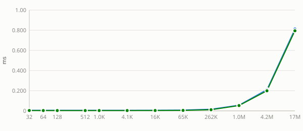
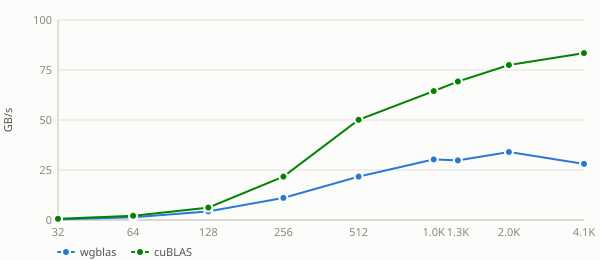
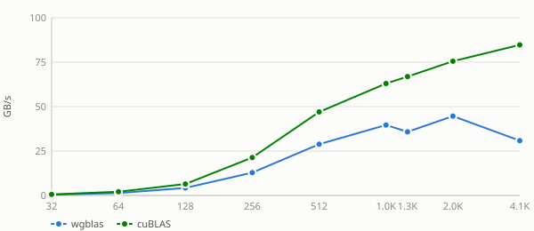
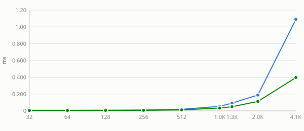
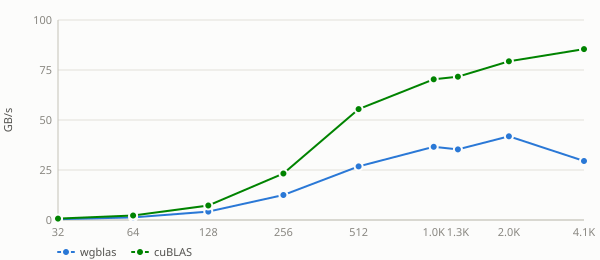
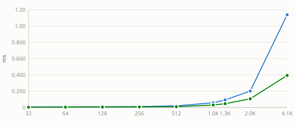
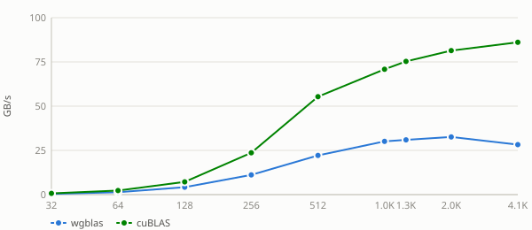
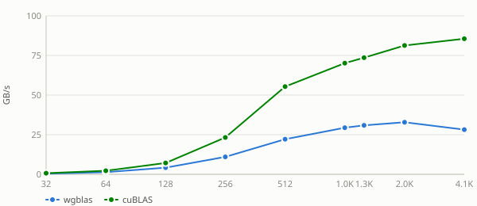
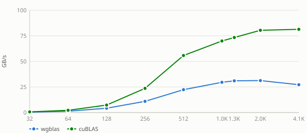
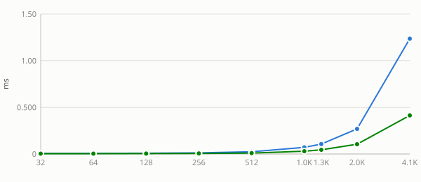

Unless noted otherwise, every result above uses a tight lda (no padding). Padding the row stride changes throughput here — the exact mechanism and shape of that effect is routine-specific — collapsed below by default, expand a pad value to see its table and chart.
Benchmark results for ssymv on Nvidia Geforce Gtx 1650.
Nvidia Geforce Gtx 1650 — wgblas vs cuBLAS

See also
Lda sweep
Unless noted otherwise, every result above uses a tight
lda(no padding). Padding the row stride changes throughput here — the exact mechanism and shape of that effect is routine-specific — collapsed below by default, expand apadvalue to see its table and chart.Nvidia Geforce Gtx 1650 — pad = 0

Nvidia Geforce Gtx 1650 — pad = 1


Nvidia Geforce Gtx 1650 — pad = 8


Nvidia Geforce Gtx 1650 — pad = 32

Nvidia Geforce Gtx 1650 — pad = 64

Nvidia Geforce Gtx 1650 — pad = 128


See also: